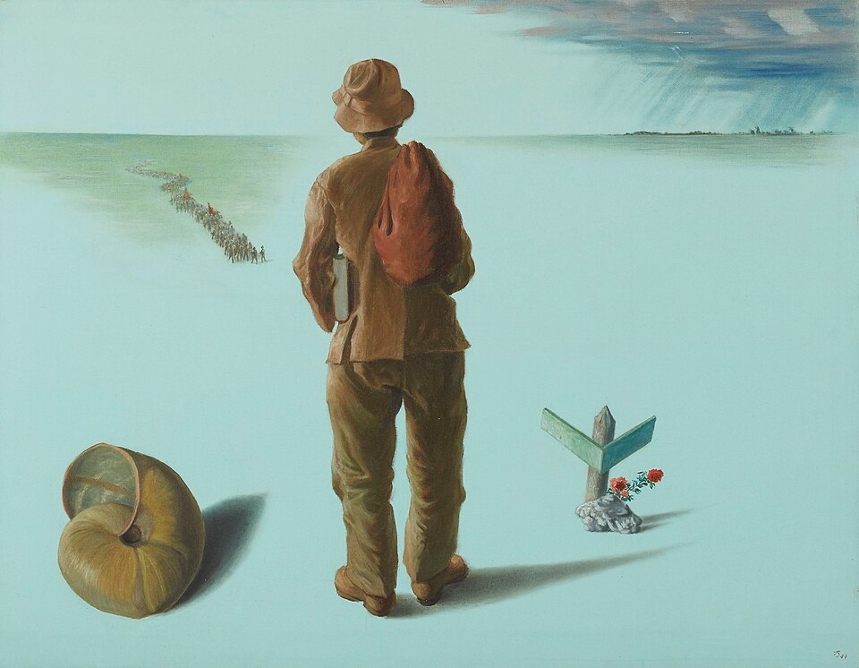
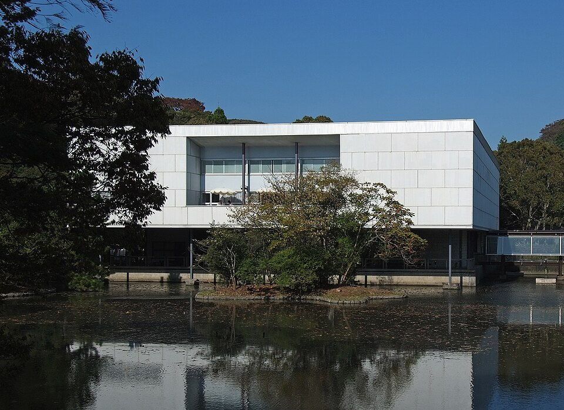
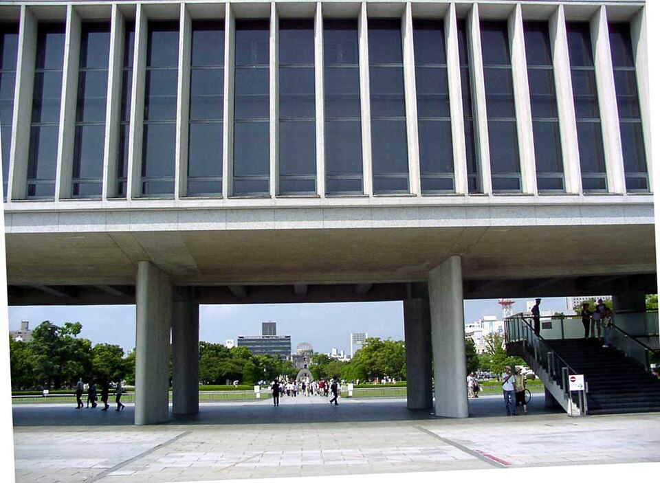
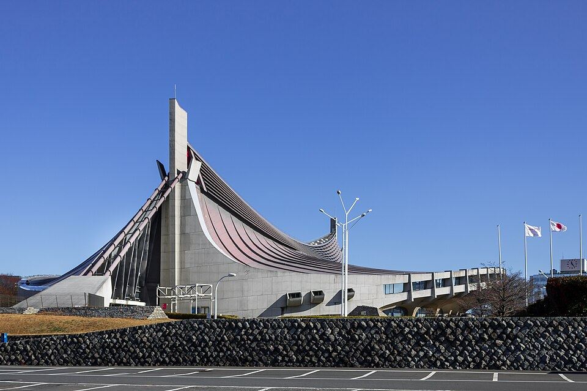
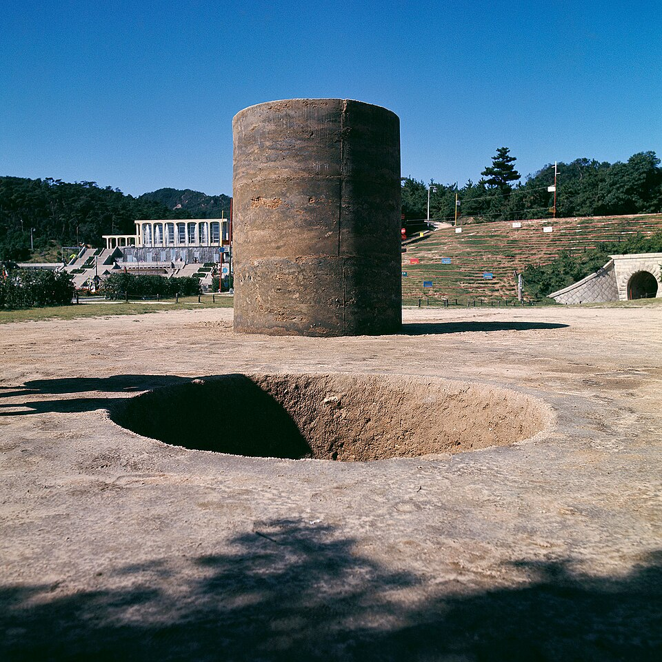
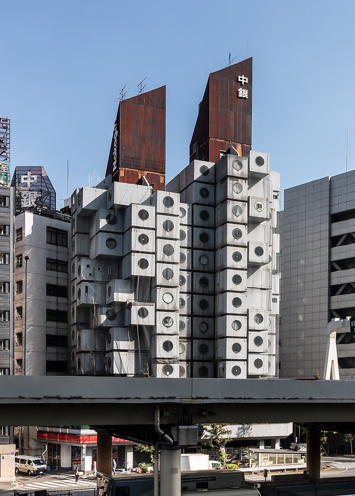

図解：1945〜1970年代の美術
戦後美術の展開
- 1945〜

戦争体験からの出発北脇昇らが体験を制作
戦前からの団体が再結成 - 1950年代


モダニズム建築坂倉準三・丹下健三
広島平和記念公園など - 1964

東京五輪と建築高度経済成長の節目
丹下健三が建築を担う - 1968

もの派の登場関根伸夫《位相―大地》
物と物の関係を示す
戦後に何が変わったか
重要人物
戦後の出発と前衛
- 北脇昇画家戦争体験をもとに《クォ・ヴァディス》を制作
- 吉原治良具体の中心もとに集まった若い作家が具体美術協会を結成
- 白髪一雄具体の画家泥と格闘する《作品》。アンフォルメルで注目
- ミシェル・タピエ批評家マチューと来日し、アンフォルメル旋風の契機に
- 棟方志功版画家1956年ヴェネツィア・ビエンナーレで受賞
反芸術とコンセプト
もの派
建築・デザイン・写真
- 丹下健三建築家広島平和記念公園、東京五輪、大阪万博に関わる
- 黒川紀章建築家メタボリズムの一翼。《中銀カプセルタワービル》
- 亀倉雄策デザイナー東京オリンピックのポスターを担う
- 岡本太郎美術家大阪万博に参加し《太陽の塔》を制作
- 土門拳写真家見過ごされてきた人々の姿をリアルに捉える
肖像・図版の出典
戦後の再出発と1950年代
敗戦後の再出発と個人の表現
書籍 p.2251945年（昭和20）、第二次世界大戦は日本の敗戦によって終わり、廃墟となった国に平和が戻った。生活が窮乏する中、美術団体が再結成され、美術雑誌も復刊した。団体に入らず、個展を中心に作品を発表する美術家も増えていった。
復興に向けて経済が急速に拡大する一方、個人の尊厳が失われ、人間性が無視される閉塞した状況も生じた。美術家は絶えず人間の内面に目を向け、社会の矛盾を指摘し、人間存在のはかなさや戦争の傷跡を表した。大正・昭和に開花した前衛の精神も、再び表現の場を求めた。
戦争体験と日本画の革新
書籍 p.225戦後美術は、戦争体験をどう捉えるかという問題から出発した。北脇昇、浜田知明、香月泰男、鶴岡政男、丸木位里・丸木俊夫妻らが、それぞれの体験をもとに制作した。北脇の《クォ・ヴァディス》（1949年、東京国立近代美術館）と鶴岡の《重い手》（1949年、東京都現代美術館）が作例となる。

《クォ・ヴァディス》
- 作者
- 北脇昇
- 制作時期
- 1949年
- 所在地・所蔵
- 東京国立近代美術館
- 素材・形式
- 油彩・キャンバス
- 別名
- Quo Vadis
出典・画像について
画像出典：Kitawaki Noboru
Public domain
作品情報：画像出典・作品情報（Commons） · 作品照合資料 · 所蔵館の作品ページ
制作メモ
所蔵館の寸法とCommonsの記録が一致し、原画の忠実な複製は日本国内でPD。
米国での原作品のPD追加タグは未記載。
原資料の図版と同じ原画の全体を掲載。
作品利用条件は日本国内のPD-Japanによる。
所蔵館の記録で同定。Commonsに該当する画像が見つからず、所蔵館公開画像の再利用条件を確認できない。
《重い手》
- 作者
- 鶴岡政男
- 制作時期
- 1949年
- 所在地・所蔵
- 東京都現代美術館
- 素材・形式
- 油彩・カンヴァス
- 別名
- Heavy Hand
二科会や独立美術協会など、戦前からの団体が再結成された。日本画滅亡論が叫ばれる中、日本画の革新を目指す創造美術とパンリアル美術協会も結成された。
実験工房・具体とアンフォルメル
書籍 p.2251950年代には従来にない動きが現れた。1951年の実験工房は美術と音楽の総合を目指し、1954年（昭和29）には吉原治良のもとに集まった若い作家が具体美術協会を結成した。
1950年代後半にはフランスの抽象画家マチューと批評家ミシェル・タピエが来日し、その影響でアンフォルメル旋風が起きた。具体の白髪一雄、元永定正に加え、斎藤義重、菅井汲の抽象作品も注目された。斎藤の《鬼》（1957年、神奈川県立近代美術館）がその作例である。
版画から進んだ国際化
書籍 p.226国際化はまず版画に現れた。棟方志功は1956年（昭和31）の第28回ヴェネツィア・ビエンナーレで版画部門のグランプリを受賞した。駒井哲郎、浜口陽三、山口源も海外で相次いで受賞した。
1960年代の表現と社会
境界を問い直した1960年代の反芸術
書籍 p.2261960年代には、戦後に世界の美術の中心となったアメリカで生まれた多様な表現が、日本にもたらされた。ネオ・ダダ、ミニマル・アート、ポップ・アート、キネティック・アート、パフォーマンス・アート、コンセプチュアル・アートなどである。美術の境界が曖昧になり、絵画・彫刻に代わって平面・立体という呼び方が登場した。
1960年前後の読売アンデパンダン展では、反芸術と呼ばれる作品が目立った。反芸術は、美術への根本的な問いかけや異議申し立てを意味する。荒川修作、篠原有司男らのネオ・ダダイズム・オルガナイザーズ、高松次郎、赤瀬川原平、中西夏之のハイレッド・センター、工藤哲巳、三木富雄らが、奇想天外な反体制の制作を繰り返した。ハイレッド・センターの《首都圏清掃整理促進運動》（1964年、東京・銀座）と三木の《EAR（耳）》（1965年、東京都現代美術館）が作例である。
1964年の行為は確認済み。複数の記録写真があり、原資料と同じコマおよび撮影写真の再利用条件は未確定。
《首都圏清掃整理促進運動》
- 作者
- ハイレッド・センター
- 制作時期
- 1964年
- 所在地・所蔵
- 東京・銀座（実施場所）
- 素材・形式
- パフォーマンス
- 別名
- Cleaning Event
出典・画像について
同名の別館所蔵品と区別できるが、この個体の再利用可能な写真が見つからず、所蔵館は無断転載を認めていない。
《EAR》
- 作者
- 三木富雄
- 制作時期
- 1965年
- 所在地・所蔵
- 東京都現代美術館
- 素材・形式
- アルミ合金
- 原題
- EAR
- 別名
- 耳
1960年代末には、関根伸夫や李禹煥らのもの派と呼ばれる動きも生まれた。
彫刻の空間意識と日本画の新表現
書籍 p.226戦前・戦中の作家の活動を出発点とする戦後彫刻では、1960年前後から流政之、江口週、小田襄、若林奮らが、空間への新しい意識を示す作品を発表した。伊藤隆道や新宮晋らのキネティック・アート、野外彫刻など、多様な表現が現れた。
具象彫刻では佐藤忠良、舟越保武、柳原義達が優れた作品を残した。日本画では中村正義、横山操が力強く特異な表現で注目された。
経済成長と大衆文化の広がり
書籍 p.2271960〜1970年代、高度経済成長によって情報化社会が急速に発達し、街に物があふれた。一方で豊かでも平凡な日常、都市人口の爆発的増加と農村の過疎、公害など、現代社会の矛盾も現れた。
経済的な繁栄の節目となったのが、1964年（昭和39）の東京オリンピックと1970年（昭和45）の日本万国博覧会（大阪万博）である。東京五輪に向けて新幹線や高速道路が整備され、各家庭にはテレビが普及した。世界の注目を集めた二つの催しでは、建築やデザインにも画期的な作品が生まれた。亀倉雄策の《第18回オリンピック競技大会（東京）のためのポスター》（1962年、東京・武蔵野美術大学美術館・図書館）がその例である。
走者写真を使った1962年第2号を同定。Commonsで見つかる日の丸ロゴとは別で、ポスター図版の再利用条件は未確認。
《東京オリンピック公式ポスター（第2号）》
- 作者
- 亀倉雄策
- 制作時期
- 1962年
- 所在地・所蔵
- 武蔵野美術大学 美術館・図書館
- 素材・形式
- 印刷・ポスター
- 別名
- 東京オリンピック／1964年東京オリンピック公式ポスター（第2号）
出典・画像について
雑誌やテレビが急速に大きな影響力を持つようになり、世相はめまぐるしく変化した。流行が生まれてはすぐに消えていく大衆文化が、日本全土に広がった。大衆文化は個人の欲望を反映して経済活動を活発にし、広い伝達力を生かして大きな流れを作った。漫画のように、新しい創造の世界を開いたメディアもあった。
異議申し立てとメディアの実験
書籍 p.227経済が繁栄する中で政治運動が激化し、労働者と資本家の闘いは国家への異議申し立てに発展した。生活が画一化され、個性が押しつぶされていくような状況で、演劇や映像にも新たな表現が生まれた。横尾忠則の《劇団状況劇場「腰巻お仙・忘却篇」のためのポスター》（1966年）がその一例である。
公演のデザインは同定したが、原資料図版の刷りは未確定。M+の所蔵品画像には横尾忠則の権利表示がある。
《腰巻お仙（劇団状況劇場）》
- 作者
- 横尾忠則
- 制作時期
- 1966年
- 所在地・所蔵
- 原資料図版の刷りの所蔵先は未確定
- 素材・形式
- シルクスクリーン・紙
- 別名
- 腰巻お仙／忘却編／Poster, 'Koshimaki-Osen: Bokyaku-hen' performance
反芸術などの美術でも実験と創造が繰り返された。大衆文化との融合によって伝達機能を強め、進化する最新技術を用いる美術も生まれた。個人の内的な創造世界から、より大きな世界へ向かおうとする動きであった。
1970年代と現代美術の考え方
大阪万博と1970年代の技術
書籍 p.2281970年の大阪万博には岡本太郎ら多くの美術家、丹下健三ら建築家、デザイナーが参加した。キネティック・アートをはじめ、1960年代後半に登場した実験的な美術が大きな位置を占めた。
1970年代前半にはヴィデオ・アートやコンピュータ・グラフィックスなど、テクノロジーと結びつく新たな表現の可能性が探られた。
考えを直接表すコンセプチュアル・アート
書籍 p.22820世紀初め、マルセル・デュシャンはレディメイドによって、素材を扱う技術より作者の考えそのものを重んじる姿勢を示した。イヴ・クラインやジャスパー・ジョーンズらがその考えを広げた。1960年代には、絵画や彫刻を作らず、文字・身体・ヴィデオなどで作者の考えを直接表現するコンセプチュアル・アート（概念芸術）が登場した。
日本でも1960年代末、表そうとする内容が絵画・彫刻の枠に入りきらないと考える美術家が現れた。思想や哲学的な考えを明確に伝えるため、さまざまな表現媒体を用い、新しい表現世界を広げた。
河原温は1966年（昭和41）から毎日、日付だけの絵画を描き始めた。生活の情景を描く代わりに日付を象徴として、その日一日の作者の生活や社会の出来事を絵に封じ込めた。数字だけでも作者の息遣いを感じさせる表現である。後の作例として《NOV 21,1985》（1985年、シリーズ「今日」から、東京都現代美術館）を参考作品に挙げる。
対象の日付と収蔵品を特定。所蔵館はOne Million Years Foundationの著作権を記載し、再利用可能な画像を確認できない。
《NOV.21,1985 「Today」（1966-2013）より》
- 作者
- 河原温
- 制作時期
- 1985年
- 所在地・所蔵
- 東京都現代美術館
- 素材・形式
- アクリル・カンヴァス
- 原題
- NOV.21,1985
- 別名
- NOV.21,1985, from "Today" series, 1966-2013／NOV 21,1985（シリーズ「今日」から）
出典・画像について
荒川修作は絵画を思想の設計図と捉え、文字や記号で思索の配線を組み立てた。見る者はそれをたどり、作者の思想へ近づく。《風景》（1967年、原資料では千葉・DIC川村記念美術館）がその作例である。草間彌生は反戦運動のハプニングやボディ・ペインティングを行い、松澤宥は物中心の文化を批判して身体による表現行為を始めた。
原資料図版に対応する1967年の作品ページと利用許諾を確認できず保留。同名の1970年作品は年代と所蔵先が異なる。
《風景》
- 作者
- 荒川修作
- 制作時期
- 1967年（原資料）
- 所在地・所蔵
- DIC川村記念美術館（原資料表記、現所在未確認）
- 素材・形式
出典・画像について
画像の掲載は確認待ち
制作メモ
原資料図版に対応する1967年の作品ページと利用許諾を確認できず保留。
同名の1970年作品は年代と所蔵先が異なる。
絵画への回帰と日本画の三つの団体
書籍 p.2281970年代後半には広がり過ぎた表現形式への批判と反省から、再び絵画・彫刻へ戻る動きが活発となった。もの派やコンセプチュアル・アートの作家にも見られ、彦坂尚嘉、堀浩哉、辰野登恵子の作品が注目された。
日本画では1974年（昭和49）、創造美術を前身とする新制作協会日本画部が独立して創画会となった。東山魁夷、杉山寧、高山辰雄らの日展、奥村土牛、小倉遊亀、平山郁夫らの院展、上村松篁、山本丘人、加山又造らの創画会という三つの団体に分かれた。
もの派が示した素材と関係
書籍 p.2291960年代中頃、アメリカではドナルド・ジャッド、リチャード・セラ、ソル・ルウィットらが、幾何学的な抽象を基本要素へ還元するミニマル・アートを展開した。ミニマリズムでは、作家の手の痕跡や彫刻の台座、現実を再現する要素を取り除き、独立した新しい物体を作った。工業製品のように表面を光沢のある状態に仕上げた作品もある。日本にもその傾向が現れ、アメリカとは異なる独自の発展を遂げた。
1968年（昭和43）の第1回神戸須磨離宮公園現代彫刻展で、関根伸夫は《位相―大地》を発表した。地面に円筒形の穴を掘り、掘った土を同じ形に固め、穴の横に置いた。表現行為を切り詰めると、単なる素材の変換作業へ還元できることを示した作品である。

《位相―大地》
- 作者
- 関根伸夫
- 制作時期
- 1968年
- 所在地・所蔵
- 兵庫・神戸須磨離宮公園（第1回神戸須磨離宮公園現代彫刻展、原展示は撤去）
- 素材・形式
- 大地、セメント
- 原題
- 位相―大地
- 別名
- Phase—Mother Earth
出典・画像について
作品情報：画像出典・作品情報（Commons）
制作メモ
1968年原展示の記録写真。
村井修撮影、作者提供、VRT確認済みのCC BY-SA 4.0。
李禹煥、菅木志雄、吉田克朗、小清水漸らによって、もの派と呼ばれる表現が広がった。鉄板・角材・川原の石などの素材を、最小限の加工で組み合わせて展覧会場に置き、物と物の関係そのものを示した。李の《関係項》（1972年、再制作1978年）が作例となる。
鉄板と石を用いる同名作が複数あり、1972年制作・1978年再制作の指定個体と利用条件を確定できず保留。
《関係項》
- 作者
- 李禹煥
- 制作時期
- 1972年、1978年再制作（原資料）
- 所在地・所蔵
- 未確定
- 素材・形式
- 別名
- Relatum
出典・画像について
画像の掲載は確認待ち
制作メモ
鉄板と石を用いる同名作が複数あり、1972年制作・1978年再制作の指定個体と利用条件を確定できず保留。
もの派の作品は一時的に設置され、発表後に解体された。菅木志雄のように、物を組み立てる行為全体を作品として示す作家もいた。水に石を投げ入れると、石や水そのものは変わらなくても波紋が生まれる。もの派の表現はこの波紋にたとえられ、それを感じ取れるかどうかは見る者に委ねられる。この考え方には東洋思想の影響が見られ、もの派は日本独特の表現形態とされる。その後、欧米で展覧会が開かれるなど、海外でも評価されるようになった。
写真・建築の戦後
戦後写真の成長と多様化
書籍 p.230戦後の急速な経済成長によって商業写真が大きく発達した。一方、木村伊兵衛や土門拳は、それまで見過ごされてきた人々の生きる姿をリアルに捉えた。現代の写真は多様化していった。
国際様式と個性的な建築への模索
書籍 p.230戦後の経済成長とともに、国際様式の影響を受けた建物が国内に次々と造られた。日本の都市には、機能性に偏った画一的な建物が目立つようになった。丹下健三の《代々木国立屋内総合競技場》（1964年、東京）がその時期の建築の一例である。

《国立代々木競技場 第一体育館》
- 作者
- 丹下健三
- 制作時期
- 1964年
- 所在地・所蔵
- 東京都渋谷区
- 素材・形式
- 建築
- 別名
- 代々木国立屋内総合競技場／Yoyogi National Gymnasium
出典・画像について
画像出典：Kakidai
CC BY-SA 4.0
作品情報：画像出典・作品情報（Commons） · 作品照合資料
制作メモ
1964年竣工の原建築のうち第一体育館を撮影した外観写真。
2016年、Kakidai撮影、CC BY-SA 4.0。
国際様式の影響が広がる一方、新しい建築の理想と方法を求める建築家たちは、ポスト・モダン建築も試みた。そこからさまざまな個性的な建物が生まれた。その後も技術の発達などによって、建築の可能性は広がっている。
団体・デザイン・建築・写真の整理
戦後の前衛グループと作家
書籍 p.252戦後の混乱を経て高度経済成長期に入ると、社会の矛盾や人間の内面を表す多様な芸術運動が展開した。1950年代の実験工房には瀧口修造・山口勝弘・武満徹・駒井哲郎が、具体美術協会には吉原治良・白髪一雄・元永定正がいた。泥と格闘する白髪の《作品》（1955年）は、具体の作例である。
1955年の行為を同定したが、対応する記録写真の再利用許諾を確認できず保留。
《泥にいどむ》
- 作者
- 白髪一雄
- 制作時期
- 1955年
- 所在地・所蔵
- 第1回具体美術展（東京）で発表
- 素材・形式
- パフォーマンス、泥
- 原題
- 泥にいどむ
出典・画像について
1960年代のネオ・ダダイズム・オルガナイザーズには荒川修作・篠原有司男・赤瀬川原平、ハイレッド・センターには高松次郎・赤瀬川原平・中西夏之がいる。もの派は他称であり、関根伸夫・李禹煥・菅木志雄・吉田克朗が代表的な作家として挙がる。
五輪と万博を担った建築家・デザイナー
書籍 p.2521964年の東京オリンピックでは、丹下健三が建築、亀倉雄策がポスターを担った。メダルではデザイナーの田中一光と、美術家の岡本太郎が挙げられる。
同一の参加記念メダルの裏面デザイン。該当面の写真と原デザインの再利用許諾を確認できず保留。
《オリンピック東京大会 参加記念メダル（裏面）》
- 作者
- 田中一光（裏面）、岡本太郎（表面）
- 制作時期
- 1964年
- 所在地・所蔵
- 武蔵野美術大学 美術館・図書館（収蔵例）
- 素材・形式
- クルミ銅
- 別名
- 第18回オリンピック競技大会 参加記念メダル
出典・画像について
同一の参加記念メダルの表面デザイン。Commons候補は写真のみ自由ライセンスで、原デザインの利用許諾が未確認。
《オリンピック東京大会 参加記念メダル（表面）》
- 作者
- 岡本太郎（表面）、田中一光（裏面）
- 制作時期
- 1964年
- 所在地・所蔵
- 武蔵野美術大学 美術館・図書館（収蔵例）
- 素材・形式
- クルミ銅
- 別名
- 第18回オリンピック競技大会 参加記念メダル
出典・画像について
1970年の大阪万博には、建築家の丹下健三・黒川紀章・菊竹清訓・磯崎新が参加した。デザイナーの福田繁雄と石岡瑛子はポスターを担当した。原資料は福田の担当に「記念硬貨」も挙げている。美術家の岡本太郎は《太陽の塔》を制作した。
岩手県立美術館は1967年の公式1号を所蔵するが、原資料は版を示さず、指定個体と自由利用画像を確定できない。
《日本万国博覧会のポスター（版未特定）》
- 作者
- 福田繁雄
- 制作時期
- 不明
- 所在地・所蔵
- 未確定
- 素材・形式
- ポスター
出典・画像について
画像の掲載は確認待ち
制作メモ
岩手県立美術館は1967年の公式1号を所蔵するが、原資料は版を示さず、指定個体と自由利用画像を確定できない。
万博の記録は福田繁雄がデザインした丹銅の記念メダルと100円記念白銅貨を区別しており、原資料が指す硬貨を同定できない。
《日本万国博覧会の記念硬貨（原資料表記）》
- 作者
- 未確定（原資料は福田繁雄）
- 制作時期
- 不明
- 所在地・所蔵
- 未確定
- 素材・形式
- 書籍の年代
- 1970年
出典・画像について
国内向け公式ポスターの作者・年代・資料番号は確認できたが、所蔵資料の画像を再利用できる条件は確認できない。
《日本万国博EXPO’70（国内向け公式ポスター）》
- 作者
- 石岡瑛子
- 制作時期
- 1970年
- 所在地・所蔵
- 乃村工藝社（資料番号600/7-35[153]）
- 素材・形式
- 印刷物
- 原題
- 日本万国博EXPO’70
- 別名
- 日本万国博覧会-ポスター-35
原品は特定できるが、Commonsの原品写真には権利上の削除記録があり、公式資料でも掲載できる画像の許諾を確認できない。
《太陽の塔》
- 作者
- 岡本太郎
- 制作時期
- 1970年
- 所在地・所蔵
- 大阪府吹田市・万博記念公園
- 素材・形式
- 鉄骨・鉄筋コンクリート造、一部吹付けコンクリート
- 原題
- 太陽の塔
- 別名
- Tower of the Sun
出典・画像について
万博の記念硬貨と記念メダルの区別
原資料は福田繁雄の担当を「記念硬貨」と記す。一方、万博の記録では福田がデザインした丹銅の記念メダルと、100円記念白銅貨が区別される。硬貨の画像で代用せず、該当作品の同定を保留した。
確認資料：タイム・カプセルEXPO’70の記録
丹下健三とメタボリズムの建築
書籍 p.253戦後を代表する建築家の丹下健三は、戦時中のコンペで注目され、戦後は広島平和記念公園、東京五輪、大阪万博など国家的な事業へ深く関わった。多くの作品を残し、その作品群は良くも悪くも日本のモダニズム建築の指標となった。坂倉準三の《神奈川県立近代美術館》（1951年）と丹下の《広島平和記念公園・記念館》（1955年）が、原資料のモダニズムの作例である。

《神奈川県立近代美術館 鎌倉館》
- 作者
- 坂倉準三
- 制作時期
- 1951年
- 所在地・所蔵
- 神奈川県鎌倉市雪ノ下（現・鎌倉文華館 鶴岡ミュージアム）
- 素材・形式
- 建築
- 原題
- 神奈川県立近代美術館
- 別名
- 鎌倉文華館 鶴岡ミュージアム／The Museum of Modern Art, Kamakura
出典・画像について
画像出典：Wiiii
CC BY-SA 3.0
作品情報：画像出典・作品情報（Commons）
制作メモ
1951年竣工の鎌倉館を美術館として使っていた2009年の外観。
撮影者WiiiiのCC BY-SA 3.0を確認。

《広島平和記念資料館本館》
- 作者
- 丹下健三
- 制作時期
- 1955年
- 所在地・所蔵
- 広島県広島市中区・広島平和記念公園
- 素材・形式
- 建築
- 別名
- 広島平和記念公園・記念館／Hiroshima Peace Memorial Museum Main Building
出典・画像について
画像出典：User:John feather
CC BY-SA 2.5
作品情報：画像出典・作品情報（Commons） · 作品照合資料
制作メモ
公園側から見た本館正面の2005年撮影。
John featherのCC BY-SA 2.5と日本の建築写真の利用条件を確認。
丹下に続く菊竹清訓や黒川紀章らは、1960年代初頭にメタボリズムの一翼を担った。新しい都市計画の理論として、海外へも大きな影響を与えた。黒川の《中銀カプセルタワービル》（1972年）が作例として挙げられる。


画像を拡大 ＋《中銀カプセルタワービル》
- 作者
- 黒川紀章
- 制作時期
- 1972年
- 所在地・所蔵
- 東京都中央区銀座（旧所在地、2022年解体）
- 素材・形式
- 建築
- 原題
- 中銀カプセルタワービル
- 別名
- Nakagin Capsule Tower
出典・画像について
画像出典：Kakidai
CC BY-SA 4.0
作品情報：画像出典・作品情報（Commons）
制作メモ
解体前の2018年11月に撮影した原建築の外観。
撮影者KakidaiのCC BY-SA 4.0を確認。
写真のリアリズムと1970年代の変化
書籍 p.253戦後の日本で長く主流となった写真は、土門拳や木村伊兵衛に代表されるリアリズムを基調とした。木村の《青年・秋田市仁井田》（1952年）が作例である。
作品と撮影年は確認済み。同じ写真に複数のプリントがあり、原資料の個体と画像の再利用条件を確認できない。
《青年・秋田市仁井田》
- 作者
- 木村伊兵衛
- 制作時期
- 1952年（撮影）
- 所在地・所蔵
- 秋田市立千秋美術館、横浜美術館など（複数のプリント）
- 素材・形式
- ゼラチン・シルバー・プリント
- 原題
- 青年・秋田市仁井田
- 別名
- 青年（秋田市仁井田）／Young Men, Niida, Akita City
出典・画像について
1970年代に荒木経惟や篠山紀信らが頭角を現したことで、写真表現に変化が生じた。彼らはその後も長く第一線で活躍し、ヌード写真などで新たな領域を開いた。
要点まとめ
- 戦後美術は戦争体験をどう捉えるかという問いから出発し、団体の再結成と個展の活動が進んだ。
- 実験工房は美術と音楽の総合を目指し、1954年には具体美術協会が結成された。
- 1950年代後半のアンフォルメル旋風と、版画家の海外受賞が国際化を進めた。
- 1960年代の反芸術は美術の根本を問い、平面・立体・身体など表現の境界を広げた。
- 高度経済成長、大衆文化、東京五輪と大阪万博は、建築・デザインや技術を用いる美術に関わった。
- コンセプチュアル・アートは文字・身体・ヴィデオなどで作者の考えを直接表した。
- もの派は素材への加工を最小限にとどめ、物と物の関係や組み立てる行為を示した。
- 1970年代後半には絵画・彫刻への回帰が進み、写真や建築でも新しい表現が展開した。
確認問題
選択問題：0／3問回答・正解0
A. 一問一答
問11954年に吉原治良のもとに集まった若い作家が結成した団体は何か。
答えを見る
問21960年前後の展覧会で目立った、美術への根本的な問いかけや異議申し立てを何と呼ぶか。
答えを見る
問31974年に新制作協会日本画部が独立して生まれた団体は何か。
答えを見る
B. 4択
問4美術と音楽の総合を目指して1951年に生まれた動きはどれか。
→ 本文で確認（実験工房・具体とアンフォルメル）
問5もの派の説明として本文に合うものはどれか。
→ 本文で確認（もの派が示した素材と関係）
問61970年代後半の美術の動きとして本文に合うものはどれか。
→ 本文で確認（絵画への回帰と日本画の三つの団体）
C. 図版問題
問7戦後の1949年に描かれた、この作品の作者は誰か。
答えを見る
問8円筒形の穴と、その横の土の柱からなる作品の作者は誰か。